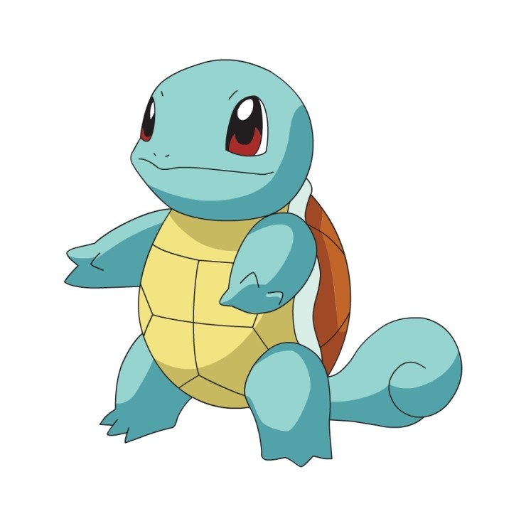

<!DOCTYPE html>
<html lang="en">
<head>
    <meta charset="UTF-8">
    <meta http-equiv="X-UA-Compatible" content="IE=edge">
    <meta name="viewport" content="width=device-width, initial-scale=1.0">
    <title>Document</title>
<style>
    td{ padding: 0px; width: 30px; height: 30px; text-align: center;}
</style>
<script>
    var map=[
        [1,1,1,1,1,1,1,1,1,1,1,1,1,1,1],
        [1,0,0,0,0,0,0,0,0,0,0,1,1,0,2],
        [1,0,1,1,1,1,1,1,1,1,0,0,1,0,1],
        [1,0,1,0,0,0,0,0,0,1,1,0,1,0,1],
        [1,0,1,0,1,1,1,1,0,1,0,0,1,0,1],
        [1,0,1,0,1,1,0,0,0,1,0,1,1,0,1],
        [1,0,1,0,1,0,0,1,0,1,0,0,1,0,1],
        [1,0,1,0,1,0,1,0,1,0,1,0,1,0,1],
        [1,0,0,0,1,0,0,0,1,0,0,0,1,0,1],
        [1,1,1,1,1,0,1,0,1,1,0,1,1,0,1],
        [1,0,0,0,1,0,1,0,1,1,0,0,1,0,1],
        [1,0,1,0,1,0,1,0,0,1,1,0,1,0,1],
        [1,0,1,0,1,1,1,1,0,1,1,0,1,0,1],
        [1,3,1,0,0,0,0,0,0,1,0,0,0,0,1],
        [1,1,1,1,1,1,1,1,1,1,1,1,1,1,1]
    ];

var strTable = "<table border='1'>";

for (y=0;y<map.length;y++){
    strTable += "<tr>";
    for (x=0;x<map[y].length;x++){
        strTable += "<td id='x"+x+"y"+y+"' bgColor='white'></td>";
    }
    strTable += "</tr>";
}
strTable += "</table>";

document.write(strTable);

function changeColor(x,y,color){
    document.getElementById("x"+x+"y"+y).bgColor=color;
}

for (y=0;y<map.length;y++){
    for (x=0;x<map[y].length;x++){
        switch(map[y][x]){
            case 0:
                break;
            case 1:
                changeColor(x,y,"darkgray");
                break;
            case 2:
                changeColor(x,y,"#45ACFF");
                break;
            case 3:
                document.getElementById("x"+x+"y"+y).innerHTML="";
                break;
            default:
        }
    }
}

//꼬부기의 현재 좌표
//map에서 3이 쓰여있는 곳
var nowX =1;
var nowY =13;

//이동경로 저장
var history = new Array();
var turn = 0;
history[turn]= [nowY,nowX];

//이동경로 다시보기
function reviewHistory(){
    document.getElementById("x"+history[0][1]+"y"+history[0][0]).bgColor='yellow';
    var count=0;
    var review = setInterval(function(){
        document.getElementById("x"+history[count][1]+"y"+history[count][0]).bgColor='#45ACFF';
        count++;
        document.getElementById("x"+history[count][1]+"y"+history[count][0]).bgColor='yellow';
        //출구에 도착하면 다시보기 종료
        if(map[history[count][0]][history[count][1]]==2){
            clearInterval(review);
        }
    },300);
}

//게임 시작 전 알림
alert("Help Kkobugi to get out the maze and go back to the water!!");

//input에 따른 이동. body에 onkeypress 설정해주어야함.
function inputFunction(e){
    // alert(e)
    switch(e) {
        case 56: //up
            if(map[nowY-1][nowX]!=1){
            document.getElementById("x"+nowX+"y"+nowY).innerHTML="";
            nowY--; turn++;
            document.getElementById("x"+nowX+"y"+nowY).innerHTML="";
            history[turn]=[nowY,nowX];
            } else {
                alert ('벽');
            }
            break;
        case 54: //right
            if(map[nowY][nowX+1]!=1){    
            document.getElementById("x"+nowX+"y"+nowY).innerHTML="";
            nowX++; turn++;
            document.getElementById("x"+nowX+"y"+nowY).innerHTML="";
            history[turn]=[nowY,nowX];
            } else {
                alert ('벽');
            }
            break;
        case 52: //left
            if(map[nowY][nowX-1]!=1){
            document.getElementById("x"+nowX+"y"+nowY).innerHTML="";
            nowX--; turn++;
            document.getElementById("x"+nowX+"y"+nowY).innerHTML="";
            history[turn]=[nowY,nowX];
            } else {
                alert ('벽');
            }
            break;
        case 50: //down        
            if(map[nowY+1][nowX]!=1){
            document.getElementById("x"+nowX+"y"+nowY).innerHTML="";
            nowY++; turn++;
            document.getElementById("x"+nowX+"y"+nowY).innerHTML="";
            history[turn]=[nowY,nowX];
            } else {
                alert ('벽');
            }
            break;
    } 
    if(map[nowY][nowX]==2){
        alert('미로탈출성공');
        askReview = confirm('기록을 확인하려면 확인 버튼 \n필요하지 않을 경우 취소 버튼');
        if(askReview){
            document.getElementById("x"+nowX+"y"+nowY).innerHTML="";
            reviewHistory();
        }else {
            alert("Thank You For Playing");
        }
    }
}

</script>
</head>
<body onkeypress="inputFunction(event.keyCode)">

</body>
</html>